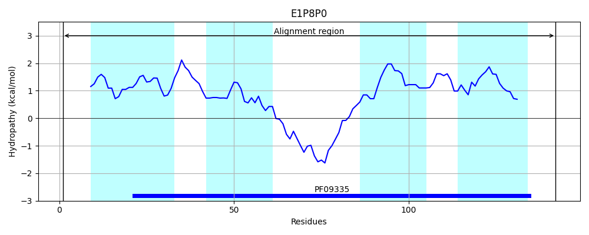
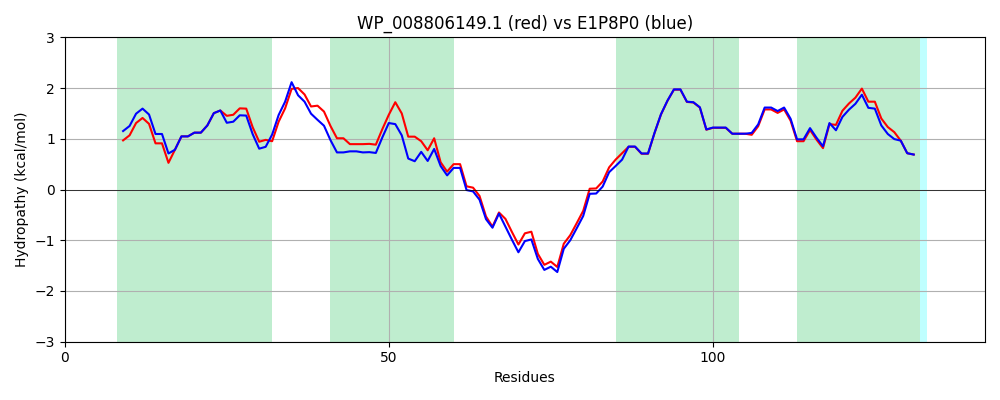

Hit Accession: E1P8P0
Hit TCID: 9.B.27.3.1
Hit Description: gnl|BL_ORD_ID|3591 gnl|TC-DB|E1P8P0|9.B.27.3.1 Conserved inner membrane protein OS=Escherichia coli OR:K5:H- (strain ABU 83972) GN=yqaA PE=4 SV=1
Mach Len: 142
e:0.000000
Query TMS Count : 4
Hit TMS Count: 4
TMS-Overlap Score: 4.250000
Predicted Substrates:None
BLAST Alignment:
Score: 670 , Bit scores: 262 bits, E-value: 4.0e-92, Alignment length: 142, Percentage identity: 88
Query: 1 MSDALSLTSLFASSFLSATLLPGNSEVVLVAMLLAGVSHPWWLVLIATIGNSLGGVTNVILGRLFPLRKTSRWQERAAGWLKRYGAVTLLLSWAPVVGDLLCLLAGWMRISWGPVLFFLCLGKALRYIVIAAATLQGMTWWH 142
MS+ALSL SLFASSFLSATLLPGNSEVVLVAMLL+GVSHPW LVL AT+GNSLGG+TNVILGR FPLRKTSRWQE+A GWLKRYGAVTLLLSW PVVGDLLCLLAGWMRISWGPV+FFLCLGKALRY+ +AAAT+QGM WWH
Sbjct: 1 MSEALSLFSLFASSFLSATLLPGNSEVVLVAMLLSGVSHPWVLVLTATMGNSLGGLTNVILGRFFPLRKTSRWQEKATGWLKRYGAVTLLLSWMPVVGDLLCLLAGWMRISWGPVIFFLCLGKALRYVAVAAATVQGMMWWH 142 | Protein Hydropathy Plots: |
|---|
 |  |
Pairwise Alignment-Hydropathy Plot:
|
|---|
|  |